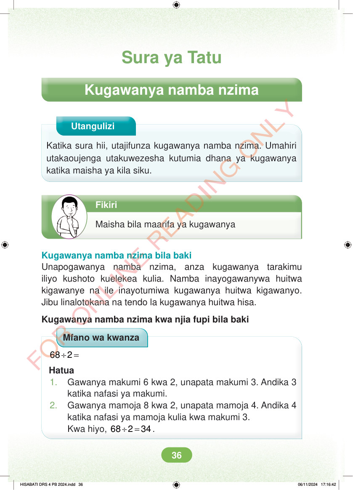

<!DOCTYPE html>
<html lang="sw-TZ"><head><meta charset="utf-8"><meta name="viewport" content="width=device-width,initial-scale=1">
<title>Hisabati: Kitabu cha Mwanafunzi Darasa la Nne</title>
<meta name="title-id" content="pg042_sec001"><meta name="page-section-id" content="44">
<link href="./content/tailwind_output.css" rel="stylesheet"><link href="./assets/libs/fontawesome/css/all.min.css" rel="stylesheet"><link href="./assets/fonts.css" rel="stylesheet">
<style>body{margin:0;background:#eef1ed}main{width:100%;display:flex;justify-content:center;padding:1rem 1rem 5rem;box-sizing:border-box}#content{width:100%;display:flex;justify-content:center}.pdf-page{position:relative;width:min(calc(100vw - 2rem),56rem);aspect-ratio:540.8980102539062/750.6610107421875;background:white;box-shadow:0 4px 24px #0002;overflow:hidden}.pdf-page img{position:absolute;inset:0;width:100%;height:100%;object-fit:fill}</style>
</head><body><main><h1 class="sr-only" id="page-heading">Ukurasa wa 42</h1><div id="content" class="opacity-0"><section role="article" data-section-type="pdf_accessible_page" data-section-id="pg042_sec001" aria-labelledby="page-heading" class="pdf-page"><p class="sr-only" data-id="pg042_gp001_tx001">Sura ya Tatu Kugawanya namba nzima Utangulizi Katika sura hii, utajifunza kugawanya namba nzima. Umahiri utakaoujenga utakuwezesha kutumia dhana ya kugawanya katika maisha ya kila siku. Fikiri Maisha bila maarifa ya kugawanya Kugawanya namba nzima bila baki Unapogawanya namba nzima, anza kugawanya tarakimu iliyo kushoto kuelekea kulia. Namba inayogawanywa huitwa kigawanye na ile inayotumiwa kugawanya huitwa kigawanyo. Jibu linalotokana na tendo la kugawanya huitwa hisa. Kugawanya namba nzima kwa njia fupi bila baki Mfano wa kwanza ÷ = 68 2 Hatua 1. Gawanya makumi 6 kwa 2, unapata makumi 3. Andika 3 katika nafasi ya makumi. 2. Gawanya mamoja 8 kwa 2, unapata mamoja 4. Andika 4 katika nafasi ya mamoja kulia kwa makumi 3. Kwa hiyo, ÷ = 68 2 34. HISABATI DRS 4 PB 2024.indd 36 HISABATI DRS 4 PB 2024.indd 36 06/11/2024 17:16:42 06/11/2024 17:16:42</p></section></div></main><div class="relative z-50" id="interface-container"></div><div class="relative z-50" id="nav-container"></div><script src="./assets/offline-preloader.js?v=audiofix-20260824-1"></script><script src="./assets/scorm.js"></script><script src="./assets/base.bundle.local.js?v=audiofix-20260824-1"></script></body></html>